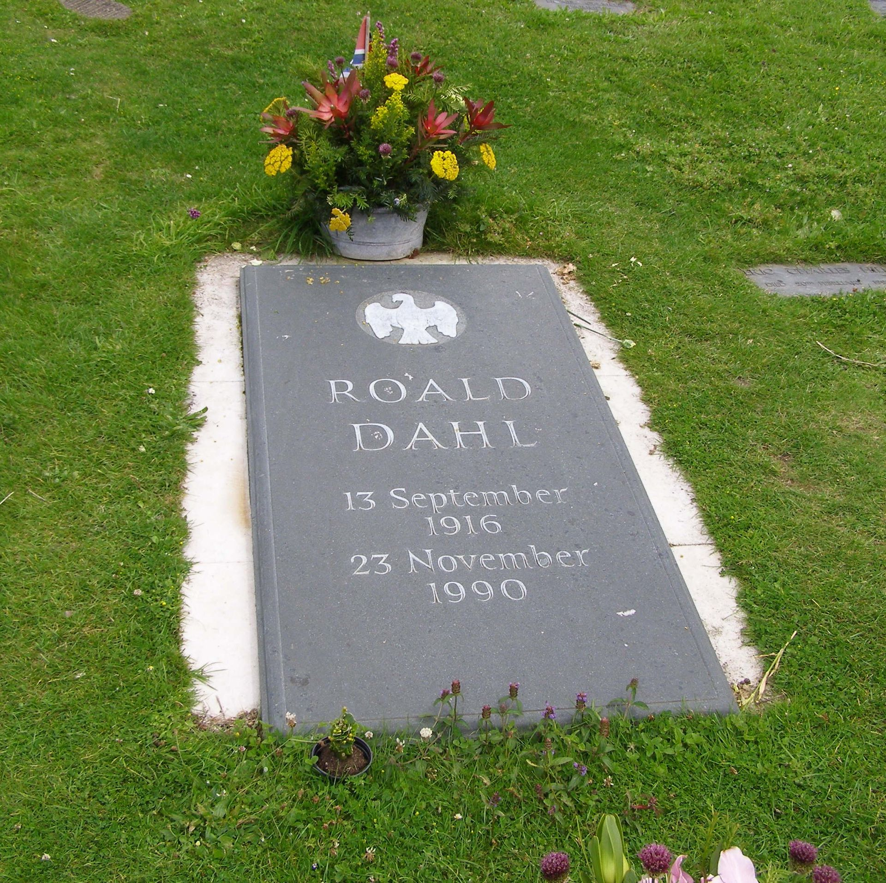
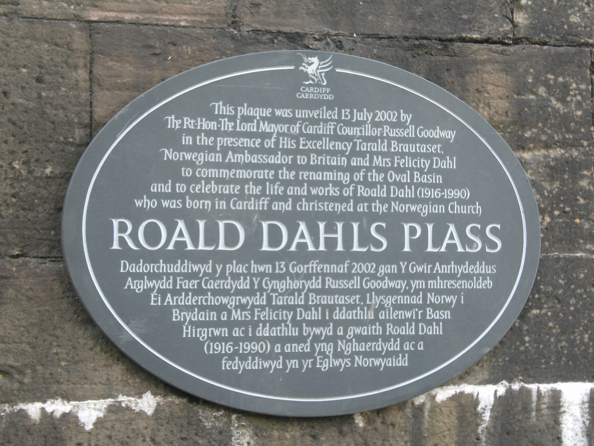
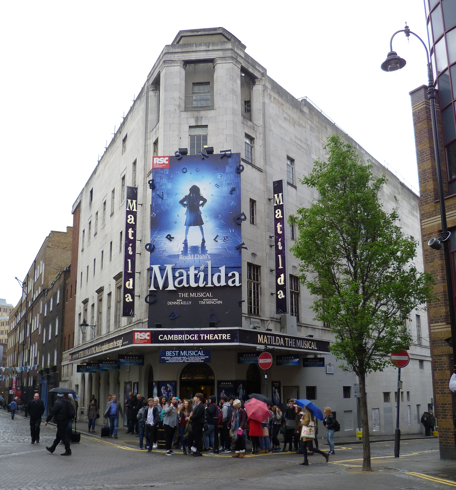

Influences and Legacy
Roald Dahl died on 23 November 1990, at the age of 74 of a rare cancer of the blood, myelodysplastic syndrome, in Oxford,[130] and was buried in the cemetery at the Church of St Peter and St Paul, Great Missenden, Buckinghamshire, England. According to his granddaughter, the family gave him a "sort of Viking funeral". He was buried with his snooker cues, some very good burgundy, chocolates, HB pencils and a power saw. Today, children continue to leave toys and flowers by his grave.[131] In November 1996, the Roald Dahl Children's Gallery was opened at the Buckinghamshire County Museum in nearby Aylesbury.[132] The main-belt asteroid 6223 Dahl, discovered by Czech astronomer Antonín Mrkos, was named in his memory in 1996.[133][134]
In 2002, one of Cardiff Bay's modern landmarks, the Oval Basin plaza, was renamed Roald Dahl Plass. Plass is Norwegian for "place" or "square", alluding to the writer's Norwegian roots. There have also been calls from the public for a permanent statue of him to be erected in Cardiff.[135] In 2016, the city celebrated the centenary of Dahl's birth in Llandaff. Welsh Arts organisations, including National Theatre Wales, Wales Millennium Centre and Literature Wales, came together for a series of events, titled Roald Dahl 100, including a Cardiff-wide City of the Unexpected, which marked his legacy.[6]
Dahl's charitable commitments in the fields of neurology, haematology and literacy during his life have been continued by his widow since his death, through Roald Dahl's Marvellous Children's Charity, formerly known as the Roald Dahl Foundation.[105] The charity provides care and support to seriously ill children and young people throughout the UK.[136] In June 2005, the Roald Dahl Museum and Story Centre in the author's home village Great Missenden was officially opened by Cherie Blair, wife of UK Prime Minister Tony Blair, to celebrate the work of Roald Dahl and advance his work in literacy education.[137] Over 50,000 visitors from abroad, mainly from Australia, Japan, the United States and Germany, travel to the village museum every year.[138]
In 2008, the UK charity Booktrust and Children's Laureate Michael Rosen inaugurated The Roald Dahl Funny Prize, an annual award to authors of humourous children's fiction.[139][140] On 14 September 2009 (the day after what would have been Dahl's 93rd birthday) the first blue plaque in his honour was unveiled in Llandaff.[141] Rather than commemorating his place of birth, however, the plaque was erected on the wall of the former sweet shop (and site of "The Great Mouse Plot of 1924") that features in the first part of his autobiography Boy. It was unveiled by his widow Felicity and son Theo.[141] In 2018, Weston-super-Mare, the town described by Dahl as a "seedy seaside resort", unveiled a blue plaque dedicated to him, on the site of the since-demolished boarding school Dahl attended, St Peter's.[142] The anniversary of Dahl's birthday on 13 September is celebrated as "Roald Dahl Day" in Africa, the United Kingdom and Latin America.[143][144][145]
In honour of Dahl, the Royal Gibraltar Post Office issued a set of four stamps in 2010 featuring Quentin Blake's original illustrations for four of the children's books written by Dahl during his long career; The BFG, The Twits, Charlie and the Chocolate Factory, and Matilda.[146] A set of six stamps was issued by Royal Mail in 2012, featuring Blake's illustrations for Charlie and the Chocolate Factory, The Twits, The Witches, Matilda, Fantastic Mr Fox, and James and the Giant Peach.[147] Dahl's influence has extended beyond literary figures. For instance film director Tim Burton recalled from childhood "the second layer [after Dr. Seuss] of connecting to a writer who gets the idea of the modern fable – and the mixture of light and darkness, and not speaking down to kids, and the kind of politically incorrect humour that kids get. I've always like that, and it's shaped everything I've felt that I've done."[148] Steven Spielberg read The BFG to his children when they were young, stating the book celebrates the fact that it's OK to be different as well as to have an active imagination: "It's very important that we preserve the tradition of allowing young children to run free with their imaginations and magic and imagination are the same thing."[149] Actress Scarlett Johansson named Fantastic Mr Fox one of the five books that made a difference to her.[150]
Dahl has an incredibly distinctive style: his subversive, unpredictable plots, musical prose and caustic wit are impossible to imitate. And yet his stories have proved astonishingly malleable. Often adapted by equally idiosyncratic writers and directors, when translated onto stage and screen, his works seamlessly take on the impression of their new maker. Like in many of his stories, Dahl offers a narrative where troublemaking is rewarded, and games and tricks are more successful than following rules. Perhaps this, more than anything, is the reason why Dahl’s stories excite the imagination of so many adults and children, and why so many storytellers across stage and screen can’t resist remaking his tales in their own individual style. Right across his body of work, playfulness and inventiveness are always prized over boring qualities like obedience and deference. In Dahl's world, creative disruption is presented in such an appealing, delicious light, that you can't help but join in the fun.
Regarded as "one of the greatest storytellers for children of the 20th century",[8] Dahl was named by The Times one of the 50 greatest British writers since 1945.[9] He ranks amongst the world's best-selling fiction authors with sales estimated at over 250 million,[5][7][10] and his books have been published in almost 60 languages.[6] In 2003 four books by Dahl, led by Charlie and the Chocolate Factory at number 35, ranked among the Top 100 in The Big Read, a survey of the British public by the BBC to determine the "nation's best-loved novel" of all time.[152] In surveys of UK teachers, parents and students, Dahl is frequently ranked the best children's writer.[153][154] In a 2006 list for the Royal Society of Literature, Harry Potter creator J. K. Rowling named Charlie and the Chocolate Factory one of her top ten books every child should read.[155] In 2012, Matilda was ranked number 30 among all-time best children's novels in a survey published by School Library Journal, a monthly with primarily US audience. The Top 100 included four books by Dahl, more than any other writer: Matilda, Charlie and the Chocolate Factory, The Witches, and The BFG.[156] US magazine Time named three Dahl books in its list of the 100 Best Young-Adult Books of All Time, more than any other author.[157]
In 2012, Dahl was among the British cultural icons selected by artist Sir Peter Blake to appear in a new version of his most famous artwork – the Beatles' Sgt. Pepper's Lonely Hearts Club Band album cover – to celebrate the British cultural figures of his life he most admires.[158][159] In a 2017 UK poll of the greatest authors, songwriters, artists and photographers, Dahl was named the greatest storyteller of all time, ranking ahead of Dickens, Shakespeare, Rowling and Spielberg.[160] In 2017, the airline Norwegian announced Dahl's image would appear on the tail fin one of their Boeing 737-800 aircraft. He is one of the company's six "British tail fin heroes", joining Queen frontman Freddie Mercury, England World Cup winner Bobby Moore, novelist Jane Austen, pioneering pilot Amy Johnson and aviation entrepreneur Freddie Laker.[161][162]